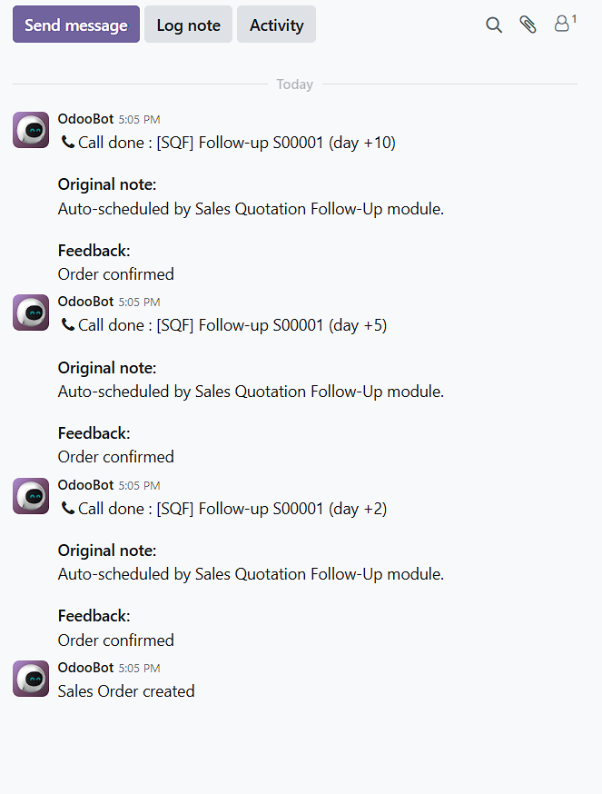
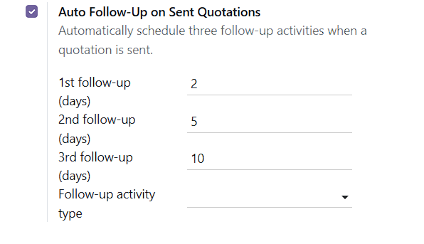
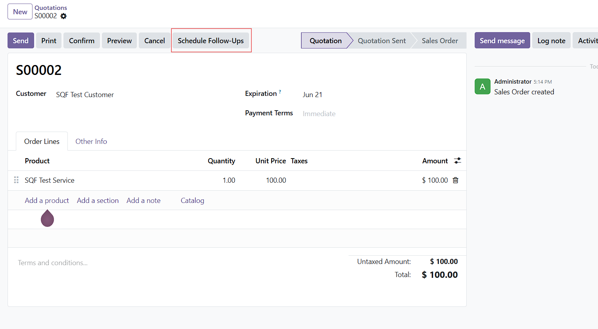
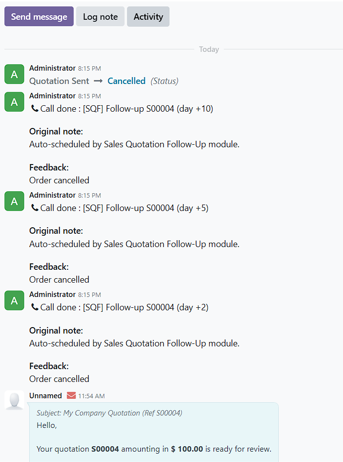
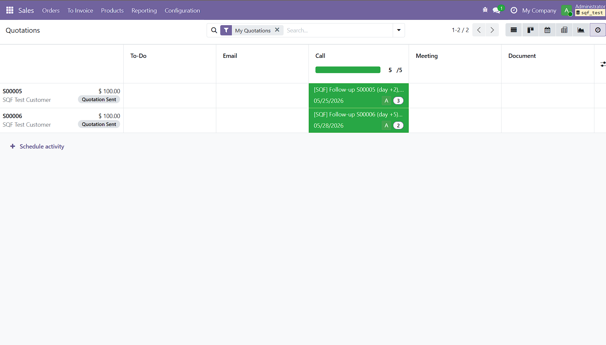
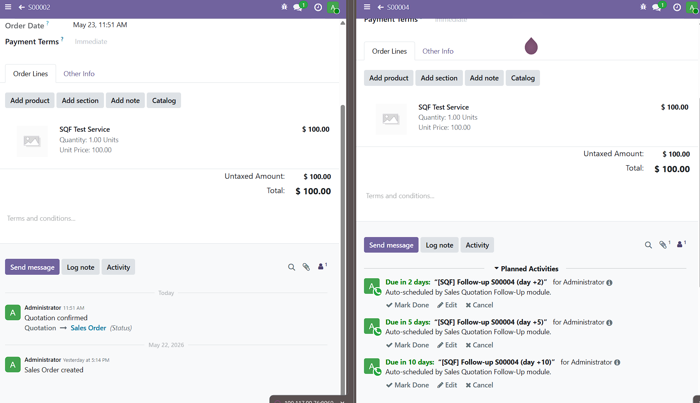

Never Lose a Quote Again
Auto-schedule three follow-up activities the moment a quotation is sent.
Pending follow-ups close themselves when the order is confirmed or cancelled.
Zero setup. 100% free.
LGPL-3
Odoo 19 CE & EE
What it does
- Auto-creates 3 follow-up activities when you click "Send by Email" on a quotation.
- Configurable intervals — default day +2, +5, +10.
- Auto-cleanup — activities close themselves when the order is confirmed or cancelled.
- Manual button — "Schedule Follow-Ups" on the quotation form for one-click rescheduling.
- Configurable activity type — defaults to "Call", change to anything in Settings.
- No external dependencies — pure Odoo, no Python packages to install.
Screenshots
1. Three follow-ups in the chatter, scheduled automatically

2. Settings panel — configure your own intervals

3. Manual "Schedule Follow-Ups" button

4. Auto-cancel when the order is confirmed

5. My Activities — salesperson view

6. Before / after comparison

Installation
- Place this module folder in your Odoo addons path.
- Restart Odoo and update the apps list.
- Install Sales Quotation Follow-Up Activities.
- Optionally adjust intervals in Settings > Sales > Quotations.
Support
This is a free, community-supported module released under LGPL-3.
Issues and pull requests are welcome on GitHub.